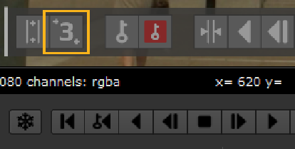

要定位屏幕上的导线工具，请执行以下操作:
| 1。 | 在 F_WireRemoval 控件中，设置 输出 到 源 。这样，您将能够看到您试图移除的导线，但不必每次更改导线工具的位置时都等待 f_wireemoval 来修复导线。 |
| 2. | 选择描述线所需的点数: 两条用于直线，三条用于简单曲线，或者五条用于更复杂的形状。这可以使用 类型 在 “属性” 面板中下拉，或者通过在 “屏幕跟踪器” 面板中切换 “点数” 按钮。 |
提示: 要显示屏幕上的跟踪器面板，请选中 在屏幕上显示控件 在 wireemoval 属性中。

| 3. | 定位屏幕上的导线工具，使其大致适合要移除的导线。要移动整个工具，请将其中心线拖动到新位置。要在工具上移动单个线点，请拖动其中心。要仅在水平或垂直方向移动单个点，请在标记该点的十字线上拖动水平或垂直线。 |
| 4. | 按 Snap To 按钮 在 wireemoval 属性或屏幕跟踪器面板中。这将找到导线的边缘，并调整移除区域以使其更接近。它通过定位最高梯度的区域来做到这一点，这些区域应该与线的边缘相对应。 |
| 5. | 实际上，线的边缘会稍微变软，因此生成的区域可能不会覆盖线的整个宽度。要纠正这一点，您可以调整 总宽度 参数。这将在所有关键帧上向外扩展区域，以确保覆盖导线的整个宽度。 |
|
|